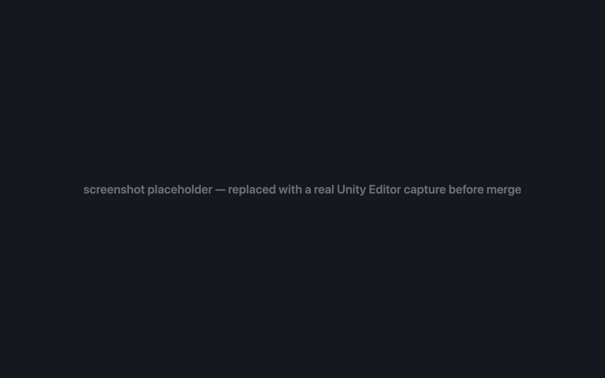

Review changes without leaving Unity.
The PrefabLens package adds an Editor window that lists every changed UnityYAML asset in your working tree and shows each one as a semantic diff — the same GameObject / component / field tree the CLI and the Chrome extension render.
Changed assets, one window
Open Window > PrefabLens. The left pane lists the assets that
differ from HEAD; selecting one shows its diff tree on the right,
with guid references resolved to asset names.

How it works
The package is pure editor code with zero dependencies. On first use it downloads
the prefablens CLI binary for your platform from GitHub Releases and
caches it; the window shells out to that binary for every diff. It reads the same
files the CLI does — text-serialized assets such as .prefab,
.unity, .asset, .mat, .anim,
and .controller.
Install
- OpenUPM
openupm add com.hashiiiii.prefablens- Package Manager git URL
https://github.com/hashiiiii/PrefabLens.git?path=editor